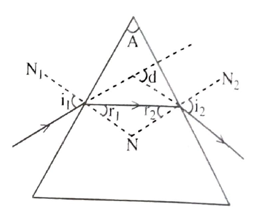
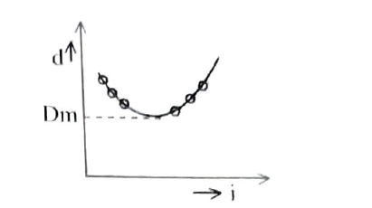

To determine the refractive index of the material of the prism by drawing i - d curve.
Drawing board, prism, white paper, set squares, protractor.
When a light ray is incident with an angle i at one of the refracting surface of a prism and emerges out with an angle of emergence. The angle between the incident ray and emergent ray is called the angle of deviation 'd'. The angle of deviation is minimum Dm for a particular angle of incident i. At this position the refracted ray is parallel to the base with the incident and emergent rays are symmetrical.
\( 2i = A + D_m \, and \, i = \frac{A + D_m}{2} \, ; \, 2r = A \, and \, r = \frac{A}{2}\)
\(\mu = \frac{sin\, i}{sing\, r}\, ;\, \mu = \frac{sin\left( \frac{A + D_m}{2} \right)}{sin \frac{A}{2}} \)
\(Angle\, of\, prism\, A = 2 tan^{-1}\left( \frac{sin\left( \frac{D_m}{2}\right)}{\mu - cos\left( \frac{D_m}{2}\right)} \right)\)
ABC is the prism with AB and AC as refractive surfaces.
PQE is incident ray
EF is refracted ray
FRS is emergent ray
NN1 is normal drawn at the point of incidence E
NN2 is normal drawn at the point of emergence F
i1 and i2 are angles of incidence and angle of emergence.
r1 and r2 are angles of refractions on the two surface 'd' is angle of deviation.
A white paper is fixed to a drawing board. The prism is kept on the paper and the out line the prism ABC is drawn. The prism is removed. A normal NN1 is drawn at a point E. A line PE the incident ray is drawn at an angle 350 with the normal. Two P and Q are kept vertical on the line. The prism is replaced. By viewing the images of P and Q through the refracting surface AC, another pin R is fixed so that the images of P and ! and R lie in a straight line. Another, pin S is fixed similarly so that the images of P and Q and R, S lie in the same line. The points R and S are located. The prism is removed. R1s are joined and extended to cut PQ extended at M. The angle TMR is measured.
The procedure is repeated for different angles of incidence 400, 450, 500, 550 and 600 and the corresponding angles of deviation are determined.
It is observed that the angle of deviation decreases first and then increase. A graph is drawn between the angles i and d. The minimum deviation Dm is determined from graph.